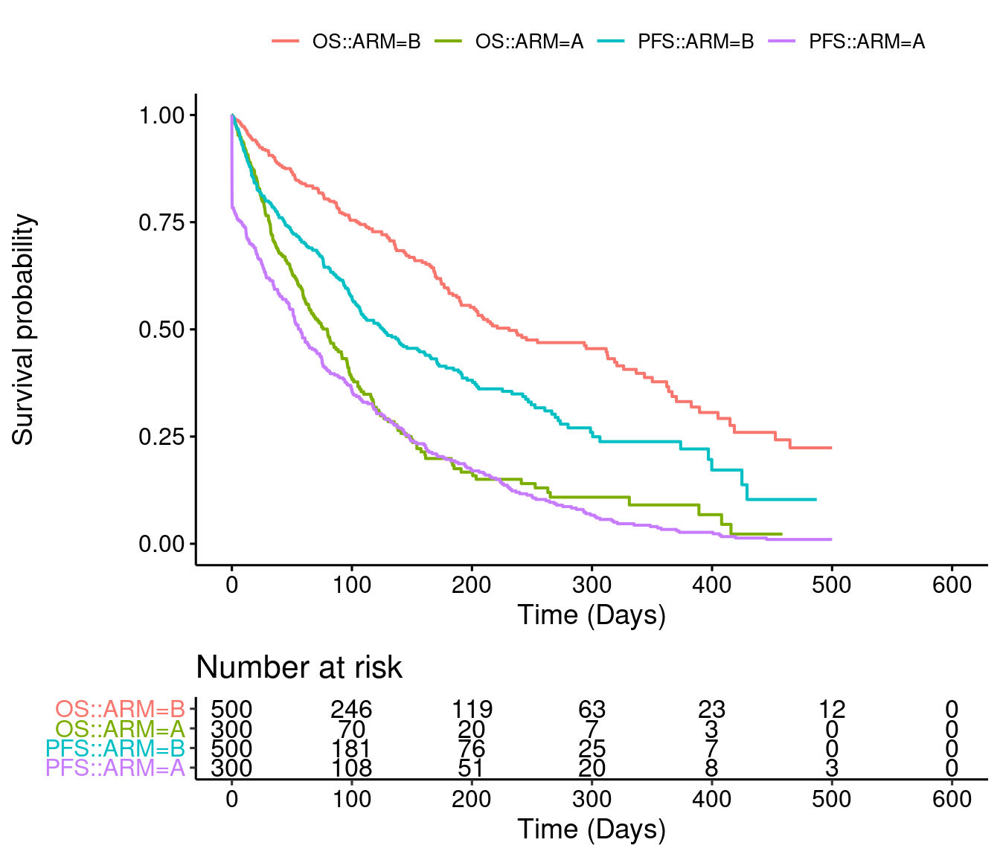
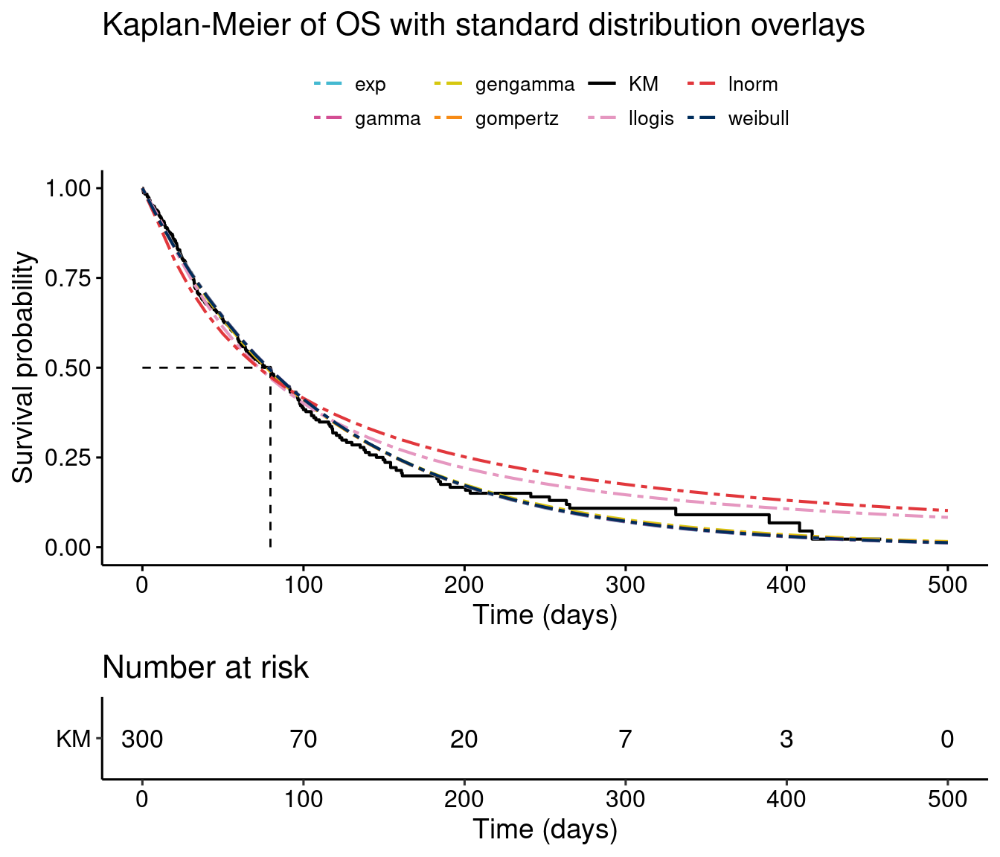
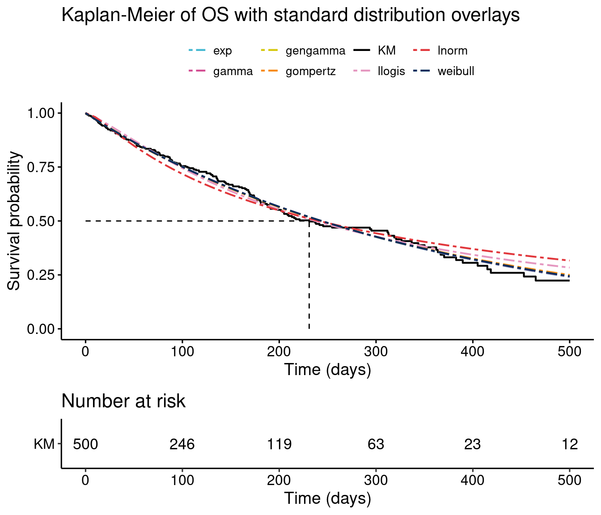

flexsurvPlus.RmdThis document follows the guidance by NICE ([1]) to fit parametric survival models to be used in an economic model.
The following packages are required to run this example:
library(flexsurvPlus) library(tibble) library(dplyr) #> #> Attaching package: 'dplyr' #> The following objects are masked from 'package:stats': #> #> filter, lag #> The following objects are masked from 'package:base': #> #> intersect, setdiff, setequal, union library(survival) library(survminer) #> Loading required package: ggplot2 #> Loading required package: ggpubr library(tidyr) BM.blue = rgb(69, 185, 209, max=255) BM.red = rgb(225, 55, 60, max=255) BM.yellow = rgb(238, 224, 30, max=255) BM.pink = rgb(211,78,147,max=255) BM.Dblue = rgb(0,45,92,max=255) BM.Dyellow = rgb(214, 200, 16, max=255) BM.green = rgb(0,1,0) BM.Dyellow = rgb(214, 200, 16, max=255) BM.black<-rgb(0,0,0,max=255) BM.grey1<-rgb(0,0,0,max=30) BM.grey2<-rgb(10,10,10,max=30) BM.grey3<-rgb(20,20,20,max=30) BM.grey3_dup<-rgb(19,20,20,max=30) BM.lightPink<-rgb(229,151,192,max=255) BM.orange<-rgb(247,139,21,max=255) Nike.blue<-rgb(51,51,255,max=255)
#### Intervention data # Read in ADaM data and rename variables of interest adtte <- read.csv(system.file("extdata", "adtte.csv", package = "flexsurvPlus", mustWork = TRUE)) #adtte <- read.csv(file="G:/Clients/Roche/2797 Development of R Code for MAIC and mixture cure models/Project/4 Survival package/3 Build package/Simulate data/adtte.csv") # subset OS data and rename OS_data <- adtte %>% filter(PARAMCD=="OS") %>% mutate(ARM = as.factor(ARM)) %>% rename(OS_days = AVAL, OS_event = EVNT, OS_cens = CNSR ) %>% select(-PARAMCD, -PARAM) # subset PFS data and rename PFS_data <- adtte %>% filter(PARAMCD=="PFS") %>% rename(PFS_days = AVAL, PFS_event = EVNT, PFS_cens = CNSR ) %>% select(-PARAMCD, -PARAM) analysis_data <- left_join(OS_data, PFS_data) #> Joining, by = c("USUBJID", "ARM", "AVALU") analysis_data$ARM <- relevel(as.factor(analysis_data$ARM), ref="B")
Before performing any statististical analysis, it is important to explore the data.
In this section, the following exploratory analysis is performed:
#### center baseline characteristics # (subtract the aggregate comparator data from the corresponding column of intervention PLD) km.est.OS <- survfit(Surv(OS_days, OS_event) ~ ARM , data = analysis_data, conf.type = 'plain') km.est.PFS <- survfit(Surv(PFS_days, PFS_event) ~ ARM , data = analysis_data, conf.type = 'plain') KM_list <- list(OS = km.est.OS, PFS = km.est.PFS) KM_plot <- ggsurvplot(KM_list, combine = T, risk.table = TRUE, data = analysis_data, break.time.by = 100, conf.int = FALSE, censor=FALSE, legend.title = '', xlab = paste0('Time (Days)'), size = 0.72, xlim = c(0, 600)) KM_plot

The fit_models function in the SURV package will fit parametric survival models for multiple distributions using the flexsurv package. The get_params function manipulates the objects from fit_models to get the parameter estimates and AIC and BIC value. The runPSM function combines the two previous functions and manipulates the parameters so that they can be used in the survival curve estimation in excel.
These functions have been used to estimate 3 types of model:
The of fit_models and get_params is shown to illustrate the underlying functionality for additional flexibility. Using runPSM with appropriate metadata is the primary way that a user would specify a particular analysis.
#Fit the models for seven standard distributions models_TEM_OS <- fit_models(model.formula=Surv(OS_days, OS_event) ~ ARM, data=analysis_data, distr = c('exp', 'weibull', 'gompertz', 'lnorm', 'llogis', 'gengamma', 'gamma')) models_TEM_OS #> $exp #> Call: #> flexsurv::flexsurvreg(formula = model.formula, data = data, dist = dist) #> #> Estimates: #> data mean est L95% U95% se exp(est) L95% #> rate NA 0.002849 0.002472 0.003285 0.000207 NA NA #> ARMA 0.375000 1.133741 0.934198 1.333284 0.101810 3.107259 2.545171 #> U95% #> rate NA #> ARMA 3.793481 #> #> N = 800, Events: 386, Censored: 414 #> Total time at risk: 88818.65 #> Log-likelihood = -2425.999, df = 2 #> AIC = 4855.998 #> #> #> $weibull #> Call: #> flexsurv::flexsurvreg(formula = model.formula, data = data, dist = dist) #> #> Estimates: #> data mean est L95% U95% se exp(est) L95% #> shape NA 0.9894 0.9145 1.0705 0.0397 NA NA #> scale NA 353.1438 303.6234 410.7410 27.2227 NA NA #> ARMA 0.3750 -1.1399 -1.3467 -0.9331 0.1055 0.3199 0.2601 #> U95% #> shape NA #> scale NA #> ARMA 0.3933 #> #> N = 800, Events: 386, Censored: 414 #> Total time at risk: 88818.65 #> Log-likelihood = -2425.964, df = 3 #> AIC = 4857.928 #> #> #> $gompertz #> Call: #> flexsurv::flexsurvreg(formula = model.formula, data = data, dist = dist) #> #> Estimates: #> data mean est L95% U95% se exp(est) #> shape NA -0.000213 -0.001295 0.000869 0.000552 NA #> rate NA 0.002923 0.002411 0.003544 0.000287 NA #> ARMA 0.375000 1.124274 0.918752 1.329796 0.104860 3.077982 #> L95% U95% #> shape NA NA #> rate NA NA #> ARMA 2.506160 3.780274 #> #> N = 800, Events: 386, Censored: 414 #> Total time at risk: 88818.65 #> Log-likelihood = -2425.926, df = 3 #> AIC = 4857.851 #> #> #> $lnorm #> Call: #> flexsurv::flexsurvreg(formula = model.formula, data = data, dist = dist) #> #> Estimates: #> data mean est L95% U95% se exp(est) L95% #> meanlog NA 5.4852 5.3068 5.6636 0.0910 NA NA #> sdlog NA 1.5274 1.4209 1.6419 0.0563 NA NA #> ARMA 0.3750 -1.2088 -1.4614 -0.9562 0.1289 0.2985 0.2319 #> U95% #> meanlog NA #> sdlog NA #> ARMA 0.3843 #> #> N = 800, Events: 386, Censored: 414 #> Total time at risk: 88818.65 #> Log-likelihood = -2450.702, df = 3 #> AIC = 4907.404 #> #> #> $llogis #> Call: #> flexsurv::flexsurvreg(formula = model.formula, data = data, dist = dist) #> #> Estimates: #> data mean est L95% U95% se exp(est) L95% #> shape NA 1.2408 1.1428 1.3471 0.0521 NA NA #> scale NA 237.2853 202.7508 277.7020 19.0419 NA NA #> ARMA 0.3750 -1.1882 -1.4147 -0.9617 0.1156 0.3048 0.2430 #> U95% #> shape NA #> scale NA #> ARMA 0.3822 #> #> N = 800, Events: 386, Censored: 414 #> Total time at risk: 88818.65 #> Log-likelihood = -2432.545, df = 3 #> AIC = 4871.089 #> #> #> $gengamma #> Call: #> flexsurv::flexsurvreg(formula = model.formula, data = data, dist = dist) #> #> Estimates: #> data mean est L95% U95% se exp(est) L95% #> mu NA 5.8404 5.6625 6.0184 0.0908 NA NA #> sigma NA 1.0439 0.9108 1.1965 0.0726 NA NA #> Q NA 0.9212 0.6508 1.1917 0.1380 NA NA #> ARMA 0.3750 -1.1500 -1.3618 -0.9381 0.1081 0.3166 0.2562 #> U95% #> mu NA #> sigma NA #> Q NA #> ARMA 0.3914 #> #> N = 800, Events: 386, Censored: 414 #> Total time at risk: 88818.65 #> Log-likelihood = -2425.806, df = 4 #> AIC = 4859.612 #> #> #> $gamma #> Call: #> flexsurv::flexsurvreg(formula = model.formula, data = data, dist = dist) #> #> Estimates: #> data mean est L95% U95% se exp(est) L95% #> shape NA 0.991716 0.889305 1.105920 0.055151 NA NA #> rate NA 0.002812 0.002248 0.003518 0.000321 NA NA #> ARMA 0.375000 1.136564 0.932578 1.340550 0.104076 3.116043 2.541052 #> U95% #> shape NA #> rate NA #> ARMA 3.821144 #> #> N = 800, Events: 386, Censored: 414 #> Total time at risk: 88818.65 #> Log-likelihood = -2425.988, df = 3 #> AIC = 4857.976 #get parameter estimates and model fit statistics params_TEM_OS <- get_params(models=models_TEM_OS) params_TEM_OS #> # A tibble: 7 x 5 #> name value coef AIC BIC #> <chr> <list> <named list> <dbl> <dbl> #> 1 exp <flxsrvrg> <dbl [2]> 4856. 4865. #> 2 weibull <flxsrvrg> <dbl [3]> 4858. 4872. #> 3 gompertz <flxsrvrg> <dbl [3]> 4858. 4872. #> 4 lnorm <flxsrvrg> <dbl [3]> 4907. 4921. #> 5 llogis <flxsrvrg> <dbl [3]> 4871. 4885. #> 6 gengamma <flxsrvrg> <dbl [4]> 4860. 4878. #> 7 gamma <flxsrvrg> <dbl [3]> 4858. 4872. # Meta data needed for labelling purposes parout_TEM_OS <- data.frame( Study_name = "Study ABC", Treatment = "All", Datacut = "Final", Population = "ITT", Endpoint = "OS", Endpoint_def = "NA", Model = "Common shape - Treatment", SampleID = "Mean estimate") psm_TEM_OS <- runPSM(model.formula = Surv(OS_days, OS_event) ~ ARM, data = analysis_data, metadata = parout_TEM_OS, dist = c('exp', 'weibull', 'gompertz', 'lnorm', 'llogis', 'gengamma', 'gamma'), model.type = 'Common shape', toi_name="A", ref_name="B") psm_TEM_OS #> $models #> $models$exp #> Call: #> flexsurv::flexsurvreg(formula = model.formula, data = data, dist = dist) #> #> Estimates: #> data mean est L95% U95% se exp(est) L95% #> rate NA 0.002849 0.002472 0.003285 0.000207 NA NA #> ARMA 0.375000 1.133741 0.934198 1.333284 0.101810 3.107259 2.545171 #> U95% #> rate NA #> ARMA 3.793481 #> #> N = 800, Events: 386, Censored: 414 #> Total time at risk: 88818.65 #> Log-likelihood = -2425.999, df = 2 #> AIC = 4855.998 #> #> #> $models$weibull #> Call: #> flexsurv::flexsurvreg(formula = model.formula, data = data, dist = dist) #> #> Estimates: #> data mean est L95% U95% se exp(est) L95% #> shape NA 0.9894 0.9145 1.0705 0.0397 NA NA #> scale NA 353.1438 303.6234 410.7410 27.2227 NA NA #> ARMA 0.3750 -1.1399 -1.3467 -0.9331 0.1055 0.3199 0.2601 #> U95% #> shape NA #> scale NA #> ARMA 0.3933 #> #> N = 800, Events: 386, Censored: 414 #> Total time at risk: 88818.65 #> Log-likelihood = -2425.964, df = 3 #> AIC = 4857.928 #> #> #> $models$gompertz #> Call: #> flexsurv::flexsurvreg(formula = model.formula, data = data, dist = dist) #> #> Estimates: #> data mean est L95% U95% se exp(est) #> shape NA -0.000213 -0.001295 0.000869 0.000552 NA #> rate NA 0.002923 0.002411 0.003544 0.000287 NA #> ARMA 0.375000 1.124274 0.918752 1.329796 0.104860 3.077982 #> L95% U95% #> shape NA NA #> rate NA NA #> ARMA 2.506160 3.780274 #> #> N = 800, Events: 386, Censored: 414 #> Total time at risk: 88818.65 #> Log-likelihood = -2425.926, df = 3 #> AIC = 4857.851 #> #> #> $models$lnorm #> Call: #> flexsurv::flexsurvreg(formula = model.formula, data = data, dist = dist) #> #> Estimates: #> data mean est L95% U95% se exp(est) L95% #> meanlog NA 5.4852 5.3068 5.6636 0.0910 NA NA #> sdlog NA 1.5274 1.4209 1.6419 0.0563 NA NA #> ARMA 0.3750 -1.2088 -1.4614 -0.9562 0.1289 0.2985 0.2319 #> U95% #> meanlog NA #> sdlog NA #> ARMA 0.3843 #> #> N = 800, Events: 386, Censored: 414 #> Total time at risk: 88818.65 #> Log-likelihood = -2450.702, df = 3 #> AIC = 4907.404 #> #> #> $models$llogis #> Call: #> flexsurv::flexsurvreg(formula = model.formula, data = data, dist = dist) #> #> Estimates: #> data mean est L95% U95% se exp(est) L95% #> shape NA 1.2408 1.1428 1.3471 0.0521 NA NA #> scale NA 237.2853 202.7508 277.7020 19.0419 NA NA #> ARMA 0.3750 -1.1882 -1.4147 -0.9617 0.1156 0.3048 0.2430 #> U95% #> shape NA #> scale NA #> ARMA 0.3822 #> #> N = 800, Events: 386, Censored: 414 #> Total time at risk: 88818.65 #> Log-likelihood = -2432.545, df = 3 #> AIC = 4871.089 #> #> #> $models$gengamma #> Call: #> flexsurv::flexsurvreg(formula = model.formula, data = data, dist = dist) #> #> Estimates: #> data mean est L95% U95% se exp(est) L95% #> mu NA 5.8404 5.6625 6.0184 0.0908 NA NA #> sigma NA 1.0439 0.9108 1.1965 0.0726 NA NA #> Q NA 0.9212 0.6508 1.1917 0.1380 NA NA #> ARMA 0.3750 -1.1500 -1.3618 -0.9381 0.1081 0.3166 0.2562 #> U95% #> mu NA #> sigma NA #> Q NA #> ARMA 0.3914 #> #> N = 800, Events: 386, Censored: 414 #> Total time at risk: 88818.65 #> Log-likelihood = -2425.806, df = 4 #> AIC = 4859.612 #> #> #> $models$gamma #> Call: #> flexsurv::flexsurvreg(formula = model.formula, data = data, dist = dist) #> #> Estimates: #> data mean est L95% U95% se exp(est) L95% #> shape NA 0.991716 0.889305 1.105920 0.055151 NA NA #> rate NA 0.002812 0.002248 0.003518 0.000321 NA NA #> ARMA 0.375000 1.136564 0.932578 1.340550 0.104076 3.116043 2.541052 #> U95% #> shape NA #> rate NA #> ARMA 3.821144 #> #> N = 800, Events: 386, Censored: 414 #> Total time at risk: 88818.65 #> Log-likelihood = -2425.988, df = 3 #> AIC = 4857.976 #> #> #> #> $model_summary #> # A tibble: 7 x 5 #> name value coef AIC BIC #> <chr> <list> <named list> <dbl> <dbl> #> 1 exp <flxsrvrg> <dbl [2]> 4856. 4865. #> 2 weibull <flxsrvrg> <dbl [3]> 4858. 4872. #> 3 gompertz <flxsrvrg> <dbl [3]> 4858. 4872. #> 4 lnorm <flxsrvrg> <dbl [3]> 4907. 4921. #> 5 llogis <flxsrvrg> <dbl [3]> 4871. 4885. #> 6 gengamma <flxsrvrg> <dbl [4]> 4860. 4878. #> 7 gamma <flxsrvrg> <dbl [3]> 4858. 4872. #> #> $parameters #> Study_name Treatment Datacut Population Endpoint Endpoint_def #> 1 Study ABC All Final ITT OS NA #> Model SampleID exp.rate.A exp.rate.B exp.rate.TE #> 1 Common shape - Treatment Mean estimate -4.726913 -5.860654 1.133741 #> weibull.scale.A weibull.scale.B weibull.shape.A weibull.shape.B #> 1 4.727001 5.866875 -0.0106083 -0.0106083 #> weibull.scale.TE gompertz.rate.A gompertz.rate.B gompertz.shape.A #> 1 -1.139875 -4.710777 -5.835051 -0.0002127812 #> gompertz.shape.B gompertz.rate.TE lnorm.meanlog.A lnorm.meanlog.B #> 1 -0.0002127812 1.124274 4.276408 5.48523 #> lnorm.sdlog.A lnorm.sdlog.B lnorm.meanlog.TE llogis.scale.A llogis.scale.B #> 1 0.4235878 0.4235878 -1.208822 4.281024 5.469263 #> llogis.shape.A llogis.shape.B llogis.scale.TE gengamma.mu.A gengamma.mu.B #> 1 0.2157325 0.2157325 -1.188239 4.690469 5.840432 #> gengamma.sigma.A gengamma.sigma.B gengamma.Q.A gengamma.Q.B gengamma.mu.TE #> 1 0.04296199 0.04296199 0.9212455 0.9212455 -1.149962 #> gamma.rate.A gamma.rate.B gamma.shape.A gamma.shape.B gamma.rate.TE #> 1 -4.737217 -5.873781 -0.00831878 -0.00831878 1.136564
These models have been fit using the runPSM function.
#split data set into individual arms analysis_data_TrtA <- filter(analysis_data, ARM=="A") analysis_data_TrtB <- filter(analysis_data, ARM=="B") # Fit models to Trt A # Meta data needed for labelling purposes parout_TrtA_OS <- data.frame( Study_name = "Study ABC", Treatment = "All", Datacut = "Final", Population = "ITT", Endpoint = "OS", Endpoint_def = "NA", Model = "Independent", SampleID = "Mean estimate") psm_armA_OS <- runPSM(model.formula = Surv(OS_days, OS_event) ~ 1, data = analysis_data_TrtA, metadata = parout_TrtA_OS, dist = c('exp', 'weibull', 'gompertz', 'lnorm', 'llogis', 'gengamma', 'gamma'), model.type = 'Separate', toi_name="A") # Fit models to Trt B # Meta data needed for labeling purposes parout_TrtB_OS <- data.frame( Study_name = "Study ABC", Treatment = "All", Datacut = "Final", Population = "ITT", Endpoint = "OS", Endpoint_def = "NA", Model = "Independent", SampleID = "Mean estimate") psm_armB_OS <- runPSM(model.formula = Surv(OS_days, OS_event) ~ 1, data = analysis_data_TrtB, metadata = parout_TrtB_OS, dist = c('exp', 'weibull', 'gompertz', 'lnorm', 'llogis', 'gengamma', 'gamma'), model.type = 'Separate', toi_name="B") # Combine the 2 independent models psm_indep_OS <- full_join(psm_armA_OS$parameters, psm_armB_OS$parameters) #> Joining, by = c("Study_name", "Treatment", "Datacut", "Population", "Endpoint", "Endpoint_def", "Model", "SampleID")
These models are similar to the separate model for each treatment as they allow all parameters to vary by treatment, however it is performed using 1 model for 2 treatments, rather than 2 models as above. They have been fit using the runPSM function.
# Independent shape models ------------------------------------------------ #This only applies for models with 2 or more parameters,i.e. not exponential #Enter metadata metadata_OS_ind <- data.frame( Study_name = "Study ABC", Treatment = "All", Datacut = "Final", Population = "ITT", Endpoint = "OS", Endpoint_def = "NA", Model = "Independent shape", SampleID = "Mean estimate" ) # All distributions that have a parameter named shape - weibull, gompertz, llogis, gamma psm_OS_ind_shape <- runPSM(model.formula=Surv(OS_days, OS_event) ~ ARM + shape(ARM), data=analysis_data, dist = c('weibull', 'gompertz', 'llogis', 'gamma'), model.type = 'Independent shape', metadata = metadata_OS_ind, toi_name="A", ref_name="B") #For the log normal distribution the shape parameter is named sdlog which #requires a different formula psm_OS_ind_lnorm <- runPSM(model.formula=Surv(OS_days, OS_event) ~ ARM + sdlog(ARM), data=analysis_data, dist = 'lnorm', model.type = 'Independent shape', metadata = metadata_OS_ind, toi_name="A", ref_name="B") #Generalised gamma model has two shape parameters in the flexsurv #parameterisation, sigma and Q. #Allowing both sigma and Q to be different between #treatment arms is equivalent to fitting separate models to each arm #Allowing only one of sigma or Q to be different between treatments is possible but hard to interpret #Not implemented in the underlying functions psm_OS_ind_gengamma <- runPSM(model.formula=Surv(OS_days, OS_event) ~ ARM + sigma(ARM) + Q(ARM), data=analysis_data, dist = 'gengamma', model.type = 'Independent shape', metadata = metadata_OS_ind, toi_name="A", ref_name="B")
Once all the models have been fit, they can be combined to output to excel such that there is 1 row per model.
parameters_all <- full_join(psm_OS_ind_shape$parameters, psm_OS_ind_lnorm$parameters) %>% full_join(psm_OS_ind_gengamma$parameters) %>% full_join(psm_TEM_OS$parameters) %>% full_join(psm_indep_OS) %>% #reorder columns select(colnames(metadata_OS_ind), starts_with("exp"), starts_with("weibull"), starts_with("gompertz"), starts_with("lnorm"), starts_with("llogis"), starts_with("gengamma"), starts_with("gamma")) %>% arrange(Model) #> Joining, by = c("Study_name", "Treatment", "Datacut", "Population", "Endpoint", "Endpoint_def", "Model", "SampleID") #> Joining, by = c("Study_name", "Treatment", "Datacut", "Population", "Endpoint", "Endpoint_def", "Model", "SampleID") #> Joining, by = c("Study_name", "Treatment", "Datacut", "Population", "Endpoint", "Endpoint_def", "Model", "SampleID", "weibull.scale.A", "weibull.scale.B", "weibull.shape.A", "weibull.shape.B", "weibull.scale.TE", "gompertz.rate.A", "gompertz.rate.B", "gompertz.shape.A", "gompertz.shape.B", "gompertz.rate.TE", "llogis.scale.A", "llogis.scale.B", "llogis.shape.A", "llogis.shape.B", "llogis.scale.TE", "gamma.rate.A", "gamma.rate.B", "gamma.shape.A", "gamma.shape.B", "gamma.rate.TE", "lnorm.meanlog.A", "lnorm.meanlog.B", "lnorm.sdlog.A", "lnorm.sdlog.B", "lnorm.meanlog.TE", "gengamma.mu.A", "gengamma.mu.B", "gengamma.sigma.A", "gengamma.sigma.B", "gengamma.Q.A", "gengamma.Q.B", "gengamma.mu.TE") #> Joining, by = c("Study_name", "Treatment", "Datacut", "Population", "Endpoint", "Endpoint_def", "Model", "SampleID", "weibull.scale.A", "weibull.scale.B", "weibull.shape.A", "weibull.shape.B", "gompertz.rate.A", "gompertz.rate.B", "gompertz.shape.A", "gompertz.shape.B", "llogis.scale.A", "llogis.scale.B", "llogis.shape.A", "llogis.shape.B", "gamma.rate.A", "gamma.rate.B", "gamma.shape.A", "gamma.shape.B", "lnorm.meanlog.A", "lnorm.meanlog.B", "lnorm.sdlog.A", "lnorm.sdlog.B", "gengamma.mu.A", "gengamma.mu.B", "gengamma.sigma.A", "gengamma.sigma.B", "gengamma.Q.A", "gengamma.Q.B", "exp.rate.A", "exp.rate.B") # block from vignette so compiles # write.csv(parameters_all, "G:/Clients/Roche/2797 Development of R Code for MAIC and mixture cure models/Project/4 Survival package/3 Build package/SURV/developing R code/params OS.csv")
Survival at a given time can be estimated using the get_curvefits function as shown below for treatment-effect models.
This can be used to cross check survival in excel models. The example is given below for the treatment-effect models.
# Landmark survival curvefits_TEM_OS_landmark <- get_curvefits(models = psm_TEM_OS$models, time = c(0, 100, 200, 300)) curvefits_df_TEM_OS_landmark <- bind_rows(curvefits_TEM_OS_landmark$curvefits, .id = "Dist") %>% pivot_wider(names_from = c(Dist, ARM), values_from = est) %>% as.data.frame() curvefits_df_TEM_OS_landmark #> time exp_B exp_A weibull_B weibull_A gompertz_B gompertz_A #> 1 0 1.0000000 1.00000000 1.0000000 1.00000000 1.0000000 1.00000000 #> 2 100 0.7520608 0.41255895 0.7505372 0.41212147 0.7488330 0.41054348 #> 3 200 0.5655955 0.17020488 0.5656671 0.17205272 0.5641759 0.17173483 #> 4 300 0.4253622 0.07021955 0.4269982 0.07217507 0.4275954 0.07316887 #> lnorm_B lnorm_A llogis_B llogis_A gengamma_B gengamma_A gamma_B #> 1 1.0000000 1.0000000 1.0000000 1.0000000 1.0000000 1.00000000 1.0000000 #> 2 0.7177497 0.4147906 0.7450039 0.4007861 0.7495611 0.40838244 0.7512597 #> 3 0.5486972 0.2517356 0.5528282 0.2205907 0.5638338 0.17452070 0.5657311 #> 4 0.4431115 0.1750247 0.4277628 0.1461258 0.4265918 0.07692335 0.4262962 #> gamma_A #> 1 1.00000000 #> 2 0.41253541 #> 3 0.17111969 #> 4 0.07106512
get_curvefits can also be used to extract estimates of survival probability over time which can be overlaid with the KM curve in R if required.
# Data set for plots curvefits_TEM_OS <- get_curvefits(models = psm_TEM_OS$models, time = seq(from=0, to = 500, by = 10)) curvefits_df_TEM_OS <- bind_rows(curvefits_TEM_OS$curvefits, .id = "Dist") %>% pivot_wider(names_from = c(ARM), values_from = c(est)) km.est.OS.TrtA <- survfit(Surv(OS_days, OS_event) ~ 1 , data = analysis_data_TrtA, conf.type = 'plain') km.est.OS.TrtB <- survfit(Surv(OS_days, OS_event) ~ 1 , data = analysis_data_TrtB, conf.type = 'plain') plot.OS.A <- ggsurvplot(km.est.OS.TrtA, combine = TRUE, censor = FALSE, risk.table = TRUE, conf.int = FALSE, break.x.by = 100, xlim = c(0, 500), xlab = "Time (days)", size = 0.72, linetype = c(6,6,6,6, 1, 6, 6,6,6), title = 'Kaplan-Meier of OS with standard distribution overlays', legend.title = '', legend.labs = c("KM"), surv.median.line = 'hv', palette = c(rgb(0,0,0,max=30)), risk.table.y.text.col = F ) plot.OS.A$plot <- plot.OS.A$plot + geom_line(aes(x = time, y = A, colour = Dist, linetype = Dist), size = 0.72, data = curvefits_df_TEM_OS) + scale_color_manual(values = c(BM.blue, BM.pink, BM.Dyellow, BM.orange, BM.grey1, BM.lightPink, BM.red, BM.Dblue)) #> Scale for 'colour' is already present. Adding another scale for 'colour', #> which will replace the existing scale. plot.OS.A

plot.OS.B <- ggsurvplot(km.est.OS.TrtB, combine = TRUE, censor = FALSE, risk.table = TRUE, conf.int = FALSE, break.x.by = 100, xlim = c(0, 500), xlab = "Time (days)", size = 0.72, linetype = c(6,6,6,6, 1, 6, 6,6,6), title = 'Kaplan-Meier of OS with standard distribution overlays', legend.title = '', legend.labs = c("KM"), surv.median.line = 'hv', palette = c(rgb(0,0,0,max=30)), risk.table.y.text.col = F ) plot.OS.B$plot <- plot.OS.B$plot + geom_line(aes(x = time, y = B, colour = Dist, linetype = Dist), size = 0.72, data = curvefits_df_TEM_OS) + scale_color_manual(values = c(BM.blue, BM.pink, BM.Dyellow, BM.orange, BM.grey1, BM.lightPink, BM.red, BM.Dblue)) #> Scale for 'colour' is already present. Adding another scale for 'colour', #> which will replace the existing scale. plot.OS.B
